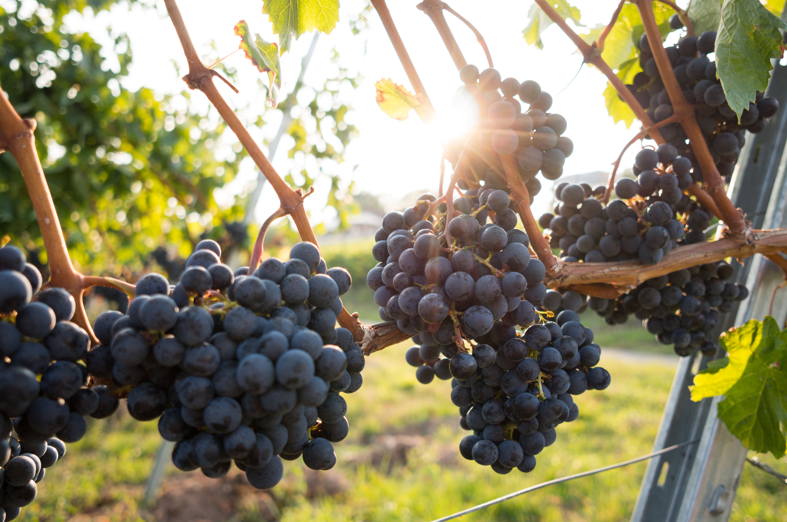

Other

Grapes
It takes about 2.5 pounds of grapes to make one bottle of wine.
Grapes come in many colors, including green, red, black, yellow, pink, and purple.
"White" grapes are actually green.
Grapes consist of about 80% of water
Pomegranates
Pomegranate means "apple with many seeds."
There are over 760 varieties of pomegranate.
India is the world’s largest producer of pomegranates.
Apples
A gallon of apple cider is made from about 36 apples.
Apple trees take four to five years to produce their first fruit.
Apples ripen six to 10 times faster at room temperature than if they are refrigerated.
Pears
There are more than 3000 varieties of pear!
Before tobacco was introduced in Europe, pear leaves were smoked.
Pears mature best off of trees.